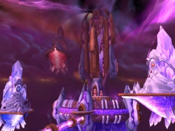
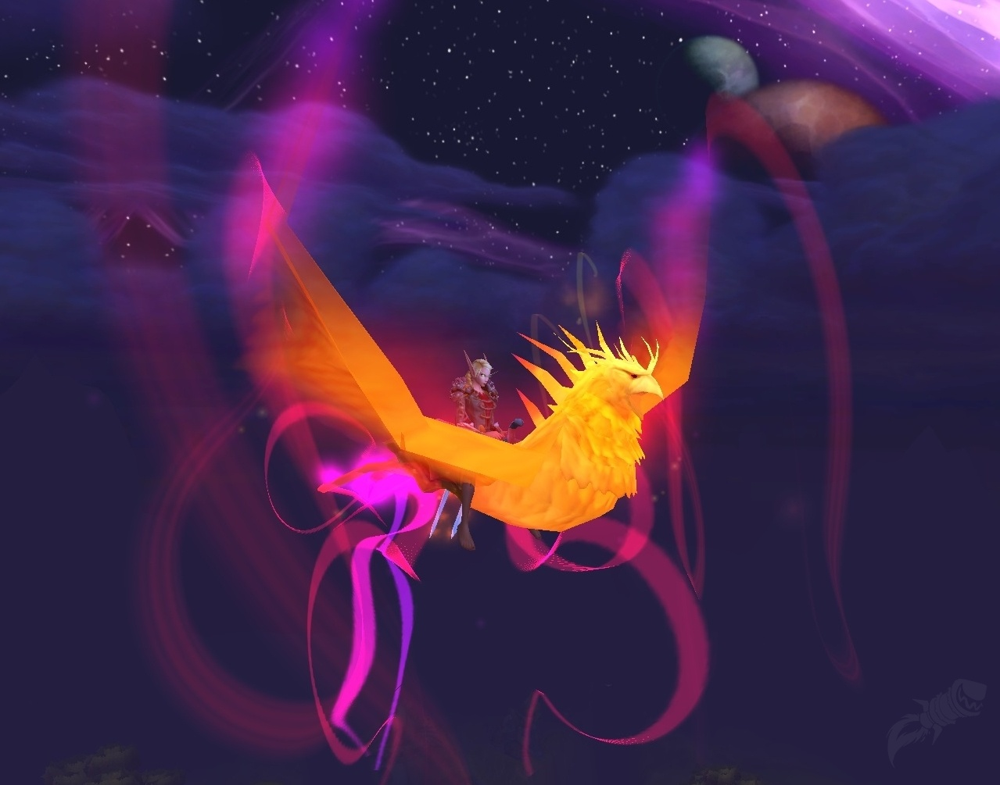
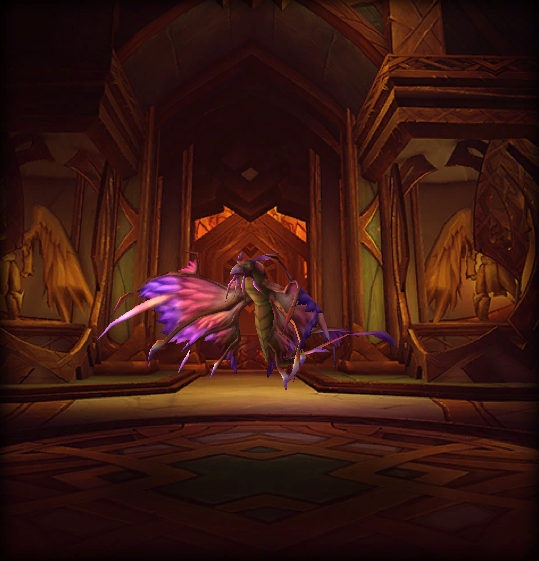
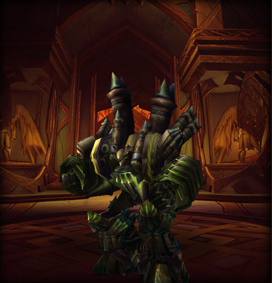
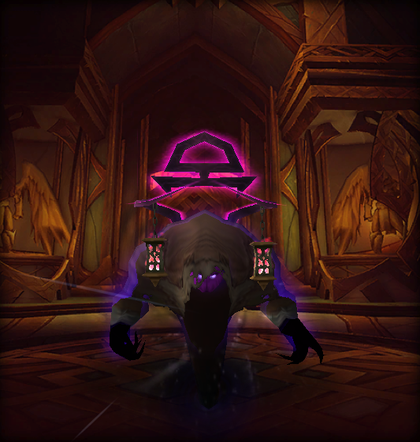
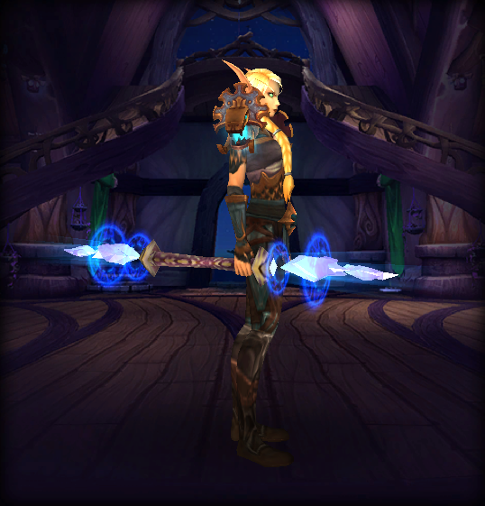
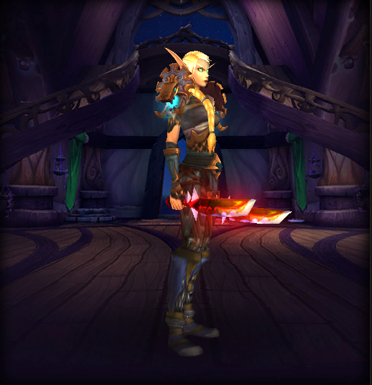
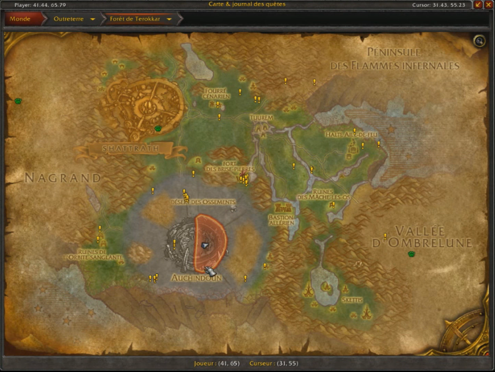

Donjon de la tempête
Raz-de-Néant | OUTRETERRE
Butins
Kael'thas Haut-Soleil  Al'ar  Saccageur du vide  Grand astromancienne Solarian    | Liste donjon |Les salles des Sethekk
Forêt de Terokkar | OUTRETERRE
Raz-de-Néant | OUTRETERRE
Forêt de Terokkar | OUTRETERRE